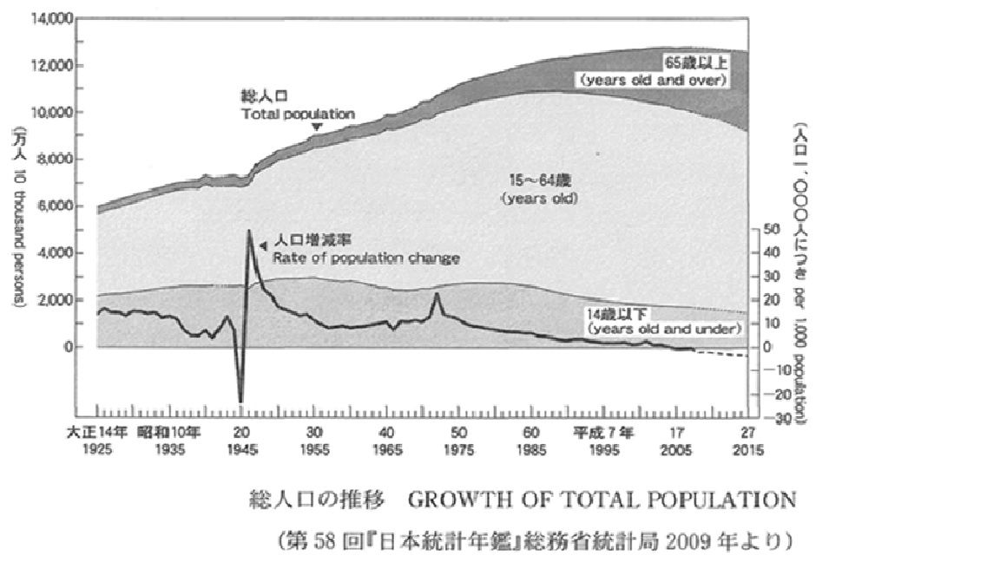
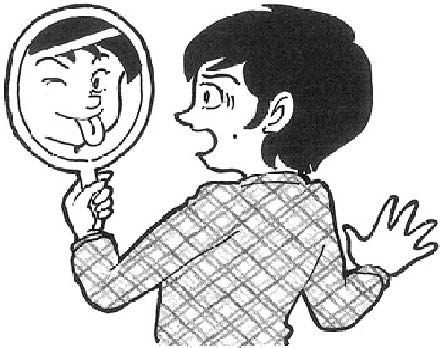

| 大学入試 自由英作文問題 モデル解答集 ＜第1集＞ 改訂版 | |
| 塩川 春彦 | |
| (2017) | |
塩 川 春 彦
帝京科学大学医療科学部（千住キャンパス）教授。
1990年代より、文科省検定済英語教科書Unicorn シリーズ（文英堂）の執筆に携わっている。特に、旧指導要領下の「ライティング」、現指導要領下の「英語表現」では、中心執筆者を務めている。
教科書執筆者としては、「良質な教科書」「結果として入試にも役立つ教科書」を目指していたので、大学入試における自由英作文に注目してきた。また、"高校生のライティング能力をどのように伸ばすべきか"という問題意識は当然持っていたので、自由英作文問題対策の参考書にも目を配ってきた。
「こんな対策本があってもよいのではないか」と思い立って執筆したのが本書である。
その他の主な著書
『英語が使える日本人の育成』（共著、三省堂）
『Interface―ビジネス英文メール入門』
（マクミランランゲージハウス）
『Introduction to MBA English―英語で学ぶ経営学の基礎』
（マクミランランゲージハウス）
『英文ライティング・日英翻訳ベーシックコース』
（DHC総合教育研究所）
The Real World Today（桐原書店）
20 STEPS TO CRITICAL WRITING（共著、桐原書店）
本書は、大学入試における自由英作文問題の典型的な論題群と、それらに対する解答例を提示している。本書の対象は、"志望校の読解問題だけでも確実に合格水準の得点をし、加えて英作文問題で得点を上乗せしたい"という意欲のある受験生である。
本書には、他の自由英作文問題対策参考書に見られない特徴がある。それは、解説を最小限に抑え、受験生には、限られた時間にできるだけ多くの解答例を読むことに集中してほしいという意図を持っていることである。このような意図を持った書籍がってもよいだろうと思ったことが、本書を出版しようと思い立った動機である。
以下に、本書のねらいを説明する。
本書のねらい
1 自由英作文のための知識の基盤をつくる
本書を読み通すことにより、自由英作文の典型的な諸論題について、"こんな論題にはこういう論点があり、こういう英語表現を用い、このように論理を展開すればよい"という、基本的知識の基盤が形成されるはずである。
ここで言う「基本的知識の基盤」が意味することを具体的に説明したい。本書の解答例の中に出てくる単語やイディオムは、英語を書く際に"使える"語彙である。また、本書の解答例は基本的に、"主題文―支持文―結語"という英語の文章の基本的な構成法にしたがっているので、読み通すことで文章の構成パターンも身につく。さらに、典型的論題群の解答例を読み通して得た知識を組み合わせることによって、他の様々な論題に対応することが可能となるのである。このことは、実際に本書の各章の解答例の後に掲載した「類似論題」「関連論題」の項目を参照し、確かめてほしい。
2 アウトプットの前にインプットを
先に「多くの解答例を読むことに集中してほしい」と書いた。このことの意味を、次に説明したい。ライティングの力を伸ばすためには、"書いて添削してもらうこと"を繰り返す必要があるとされている。それはその通りである。しかし、社会問題の知識も乏しく、ライティングのために"使える"語彙力も貧しく、英語の文章の構成法をきちんと学んでいない学習者が書いた英作文には、せいぜい文法の誤りを添削することくらいしかできない。結局、手本を提示し、「このように書きなさい」となるのである。
やみくもに英作文する前に、"ライティングの手本になる英文"をたくさん読んだ方がよい。一定量以上の良質のインプットがなければ、良いアウトプットはあり得ないのである。ただし、入試の読解問題の英文、進学校で使われる読解用テキストの英文の多くは、受験生にとって"ライティングの手本になる英文"ではない。使われている単語が難しかったり，構文が複雑だったり、書き手の個性が強く出た文体であったりするからである。本書では、日本人学習者にとっての"ライティングの手本になる英文"を提示しているつもりである。
3 日本語訳から英文再現へ
本書では、後半部分に解答例の日本語訳を掲載している。これらの日本語訳から英文を再現する練習を通して、本書で学んだ知識を血肉化してほしい。
本書は、まず、4巻シリーズとして出版するが、巻を重ねてできるだけ多くの論題に対する解答例を提示していきたいと考えている。本シリーズが受験生のライティング力向上に役立つことを切に願っている。
2016年11月
著者しるす
本書における論題の選定の元になっているのは、著者が作成した過去20年余りの国公立大学の自由英作文問題のデータベースである。本書で取り上げた論題ごとに、他大学で出題された同一論題や類似論題に関する情報を付記しているが、それらは、このデータベースに基づいている。
このデータベースにより、「頻出論題」群も把握でき、「小学校の英語教育の是非」に代表される頻出論題群は当然に取り上げている。
論題選定の基準とデータベース
しかし、論題選定の基準は、"頻出かどうか"だけではない。環境・資源、政治、経済、社会、教育、科学、医療・医学などの分野にまたがる論題群、「尊敬する人」のような信条・好みを書かせる論題群などを概観し、バランスを重視して、本書掲載の論題を選定している。それは、「まえがき」でも述べたように、本書を通して、自由英作文のための「知識の基盤」となるものを提供したいからである。バランスのとれた論題の選定のためにも、このデータベースが貢献している。
本書における論題選定は、著者の気まぐれや好みでなされているわけではないことを強調しておきたい。
各章の構成
・論題
・解答例
・英文の構成
解答例の英文のアウトラインを示す
・過去20年のデータ分析
国公立大学入試における過去20年余りの出題実績データから、同一論題、類似論題、関連論題をピックアップ、本書が示す解答例の応用範囲を示す
[社会～教育・学習]
Some elementary schools in Japan now offer English classes. Should English be a required subject for elementary school students? ＜60-80 words＞
（北九州市立大学）
Write 120 to 150 words of English about the topic below.
Starting foreign language education at a very early age is a good idea.
（一橋大学）
＊解答例は次ページに掲載
小学校の英語教育の是非
解答例1（反対論、141語。[ ]内を省略すれば、70語）
[Generally speaking, starting foreign language education at a very early age is a good idea. However,] I disagree with the present English education conducted at elementary schools for the following reasons. First, there are few trained teachers. Teaching a foreign language to children requires specific knowledge of teaching methods and skills. It is not a good idea to make homeroom teachers, who are amateurs, teach English. Second, learning English one hour or so a week, as many children do, is not as useful as people expect. [In fact, some Japanese private elementary schools have taught English for decades. Nevertheless, there is no data to show that many of the graduates of those schools have a better command of English. Certainly, English is a convenient communication tool in today's world. However, we should not expect too much from English education at elementary schools.] (141 words)
＊英文の構成は次ページに掲載
英文の構成
主題文：
一般論としては早期外国語教育は良いことだが、現在の小学校での英語教育には反対
支持文：
（理由1）訓練を受けた教員がほとんどいない
（理由2）週に1時間くらい英語を学んでも大して役立たない
結 語：
小学校英語教育に過大な期待をすべきでない
＊次ページに解答例2を掲載
小学校の英語教育の是非
解答例2 （賛成論、73語）
I agree with teaching English at elementary schools for two reasons. First, the importance of English is dramatically increasing as a tool for international communication in this age of globalization. Second, it is better to start learning a foreign language at an early age. It is a fact that children can learn a language faster and better than adults especially in listening and speaking. It is not an easy task, but worth doing. (73 words)
＊英文の構成は次ページに掲載
英文の構成
主題文：
小学校で英語を教えることに賛成
支持文：
（理由1）グローバル化の時代では、英語の重要性は劇的に高まっている
（理由2）早い年齢で外国語を学ぶほうが良い
結 語：
簡単な仕事ではないが、やる価値がある
＊次ページに解答例3を掲載
小学校の英語教育の是非
解答例3 （賛成論、137語）
Starting foreign language education at a very early age is a good idea. In this sense, I agree with teaching English at elementary schools. First, it is a fact that children can learn a language faster and better than adults especially in listening and speaking. It's much more difficult for adults to learn a foreign language because they are too familiar with communicating in their native tongue. Second, Japanese children should get used to English pronunciation before they start to recognize foreign words with unnaturalKatakana andRomaji pronunciations. Furthermore, the importance of English is dramatically increasing as a tool for international communication in this age of globalization. If we combine both native and non-native speakers, more people speak English than any other language. English education at elementary schools is not an easy task, but worth doing.
＊英文の構成は次ページに掲載
英文の構成
主題文：
早い年齢での外国語学習は良いことであり、小学校英語教育に賛成
支持文：
（理由1）子供たちは、大人たちより上手く速く学ぶことができる
（理由2）カタカナ発音で外国語を認識し始める前に、英語の発音に慣れるべき
（理由3）グローバル化の時代に、英語の重要性は劇的に高まっている
結 語：
小学校での英語教育は簡単な仕事ではないが、やる価値がある。
小学校の英語教育の是非
過去20年のデータ分析
同一、ほぼ同一の論題を出題した大学
上記の2大学の他に17大学
[社会～政治]
2015年に選挙権年齢が18歳に引き下げになりましたが，このことについてどう思いますか。100語程度の英語で書きなさい。
（愛知教育大学）
＊解答例は次ページに掲載
選挙年齢が18歳に引き下げられたことへの賛否
解答例（145語。[ ]内を省略すれば108語）
Japan lowered the voting age from 20 to 18 in 2015. I believe that this change was good. First, the majority of the countries in the world have 18 as the minimum voting age. This means that young people in Japan have gained the same rights as young people in other countries. Second, giving the right to vote means making people share responsibility. Lowering the voting age encourages young people to be more engaged in local and national politics. Finally, due to this change, the voices of younger people will be better heard in politics. Their opinions are important because they shoulder the burden of the aged society. [Sadly, the voting rate of 18- and 19-year-olds was lower than the overall average in the first national election under the new law. However, I believe that in time young people will become more interested in politics.] (145 words)
＊英文の構成は次ページに掲載
英文の構成
主題文：
選挙年齢の20歳から18歳への変更は良かった
支持文： ＜理由の列挙＞
（理由1）世界の国々の多くは、18歳を最少の選挙年齢としている
（理由2）投票権を与えることは、人々に責任を共有させ、政治に携わることを促進する
（理由3）若い人々の声が一層良く聞かれるようになる
（反論と再反論）新法律の下での最初の国政選挙では18－19歳の投票率は低かったが、若い人々は政治により興味を持つようになるだろう
選挙年齢が18歳に引き下げられたことへの賛否
過去20年のデータ分析
同一論題を出題した大学
2015年以前は「選挙年齢を18歳に引き下げるべきか」という論題で出題された。これらを含めて、同一論題は、東京大学など7大学から出題された。
関連論題
「成人年齢を18歳に引き下げるべきか」（一橋大学など6大学）
[社会～少子・高齢化]
次のグラフは日本の人口の推移を表したものである。このグラフを基にして，次の問いに英語で答えなさい。
(1) このグラフに表された日本の人口の移り変わりを述べなさい。 ＜80語程度＞
(2) このグラフから，現在日本の社会でどのような問題が生じているか，あるいは今後生じる可能性があるかを述べなさい。 ＜80語程度＞
（東北大学）
＊グラフは次ページに掲載
＊解答例はグラフの後に掲載

少子高齢化がもたらす問題
解答例
(1) The total population of Japan had been steadily increasing until the 1990s, reaching over 120 million. However, it has been almost flat for the past decade. By age group, although the number of people who are 15 years-64 years doubled in half a century, in recent years the number has been dramatically declining. On the other hand, the number of people who are 65 and over is now more than ten times as large as that in 1945, and it is rapidly increasing. (83 words)
英文の構成
・ 総人口の推移
・ 15-64歳の人口の推移
・ 65歳以上の人口の推移
少子高齢化がもたらす問題
解答例
(2) One of the remarkable tendencies shown in the graph clearly means that Japan has become an aged society. In other words, a decreasing number of people of working age support an increasing number of elderly citizens now. If this trend continues, Japan's pension plan is likely to face a crisis. Furthermore, Japan will have to increase the welfare budget to cover social expenditures such as pensions and medical care, although tax revenue is not likely to increase. (78 words)
＊英文の構成は次ページに掲載
英文の構成
主題文：
日本は高齢社会になった
支持文： ＜問題点の列挙＞
（問題1）減少し続ける生産年齢の人々が、増加し続ける高齢者人口を支える
（問題2）年金制度は危機に直面しそう
（問題3）福祉予算を増やさなければならなくなる
＜編者注＞ これらの解答例は、少子高齢化問題の基本を押さえているので、少子高齢化が論題になった場合、たいてい適用できる。
少子高齢化がもたらす問題
過去20年のデータ分析
ほぼ同一のグラフ解釈論題を出題した大学
北海道大学、広島大学
少子高齢化の原因、影響、対策のいずれかを論題にして出題した大学
上記の他、福井大学など14大学
少子高齢化に関連して、移民、年金などに焦点を絞った論題を出題した大学
一橋大学など5大学
[社会～環境資源]
Because of the trouble at the nuclear power plant in Fukushima Prefecture, many people are saying that Japan should no longer rely on nuclear energy. But can Japan really afford to close down its nuclear reactors? What do you think?＜About 100 words＞
（弘前大学）
［編者注：この問題には，原発やエネルギー関連の英単語が30個ヒントとして与えられているのだが，本書収録においては省略した］
＊解答例は次ページに掲載
日本は原発を廃止できるか
解答例
Of course, Japan can and should close down all the nuclear reactors in Japan. First of all, since March 11, 2011, few nuclear power plants have been in operation. Did Japan suffer from an electricity shortage? No. Japanese economy and industries have worked properly. Japanese people have spent several hot summer seasons, using a lot of electricity. Sufficient electricity has been provided without nuclear power generation. Furthermore, after the Fukushima accident, it became clear that nuclear energy is not "low-cost," "safe," or "clean." Also, Japan has not found a permanent storage site for highly radioactive waste, although its dangerousness will last for thousands of years. (105 words)
＊英文の構成は次ページに掲載
英文の構成
主題文：
すべての原子炉を廃炉にすべき
支持文：
（理由１）ほとんどの原発が稼働していなくても電力不足になっていない
（理由２）原子力は、低コストでも、安全でも、クリーンでもない
（理由３）核廃棄物の保管場所がない
日本は原発を廃止できるか
過去20年のデータ分析
同一の論題を出題した大学
京都府立医科大学など4大学
類似論題
「原発事故はあなたの考えを変えたか」（岩手大学） / 「原発事故による環境問題」（熊本県立大学）
関連論題
「望ましいエネルギー源」（東京農工大学など）
[社会～多様性、人権、ジェンダー]
Write 120 to 150 words of English on the statement below.
Recently, many governments around the world are legalizing marriage between two people of the same sex. Legalizing same-sex marriage is a good idea in Japan. Explain why this is true.
（一橋大学）
＊解答例は次ページに掲載
同性婚が認められるべき理由
解答例
Same-sex marriage should be legalized in Japan, too. It is clear if you think about the definition and functions of a family. Firstly, a family is a group of individuals who support each other and are responsible for each other. Secondly, in a family, affection and sexual needs are fulfilled. Thirdly, a family provides a home where family members can relax and rest. These things are not exclusive to opposite-sex couples. Although a family is usually expected to reproduce and rear children, a same-sex couple can adopt children in need of a home.
Another reason why same-sex marriage should be legalized is that it would promote tolerance and acceptance of all people. Homosexuals should have the same rights as everybody else. If same-sex marriage were permitted, same-sex couples would enjoy the same rights and benefits as other married couples. This would increase their potential to contribute to society. (148 words)
＊英文の構成は次ページに掲載
英文の構成
第1パラグラフ
主題文：
同性婚は、日本でも認められるべき
支持文： ＜家族の定義と機能について考察＞
（定義）家族は、互いに支えあう人たちの集まり
（機能1）家族のなかで、愛情と性的なニーズが満たされる
（機能2）家族の構成員が休息できる場所である家庭を提供
以上のことは、異性婚夫婦だけに当てはまることではない
（機能3）子供を産み育てることについては、同性婚カップルは養子を迎えることができる
第2パラグラフ
主題文：
同性婚が合法化されれば、すべての人々に対する寛容性と受容性を高める
支持文：
同性愛者たちも他のあらゆる人と同様の権利を持つべき
結 語： 同性婚を認めれば、同性愛者カップルたちの社会貢献の可能性を高める
同性婚が認められるべき理由
過去20年のデータ分析
類似論題
「日本在住で同性婚を望む個人へのアドバイスを書く」（名古屋市立大学など）
[社会～情報技術]
Critics argue that there are many advantages and disadvantages to using Social Networking Sites: for example Mixi and Twitter. Do you think there are more advantages or disadvantages? ＜About 100 words＞
（名古屋市立大学）
＊解答例は次ページに掲載
SNS の利点と欠点
解答例1（利点が多い）
I believe there are more advantages to using social networking sites (SNS). Therefore, SNS have taken root as a widely-used communication tool. There are three main advantages that have caused SNS to become widespread. First, SNS are perfect tools for people who like to keep a diary and want to keep in touch with and inform faraway friends about their lives. Furthermore, SNS are convenient tools for people who are interested in social affairs and who want to share controversial opinions. Finally, SNS are effective tools for business. Many companies use SNS for advertising and marketing. (96 words)
＊英文の構成は次ページに掲載
英文の構成
主題文：
SNSは、利点の方が多い、それゆえに、SNSは定着した
支持文：
（利点１）日記をつけることが好きで、友人たちにも情報を届けたい人々には、完璧なツール
（利点２）社会的事象に興味があり、意見を投稿したい人々にも便利なツール
（利点３）ビジネスにとっても有効
＊次ページに解答例2を掲載
SNS の利点と欠点
解答例2（欠点が多い）
I have to say that there are more disadvantages to Social Networking Sites. The most serious disadvantage is caused by the fact that people can communicate anonymously or use a fake name on SNS. For one, irresponsible remarks are easily made under anonymity. To make matters worse, many people believe in baseless views. Also, when social issues are discussed, many people use rude language which they would never say in face-to-face communication. Thus, a discussion easily turns to be an exchange of abusive words. In my view, at least in shaping constructive opinions in society, SNSs have more disadvantages than advantages. (101 words)
＊英文の構成は次ページに掲載
英文の構成
主題文：
SNSについては、欠点の方が多い
支持文： ＜匿名性から引き起こされる欠点について論述＞
（欠点1）無責任な発言が匿名のもとで簡単になされる
（欠点2）社会問題が議論される時に、乱暴な言葉が使われる
結 語：
建設的な意見を形成することにおいては、SNSは利点より欠点の方が多い。
SNS の利点と欠点
過去20年のデータ分析
類似論題
「ブログの利点と欠点」（福井大学）＜SNSをblogsと置き換えれば、上の解答例を応用できる＞
関連論題
「SNSに投稿し過ぎることの問題点」（一橋大学）
「インターネットの利点と欠点」「インターネットは人々の生活をどう変えたか」（新潟大学など7大学）
[社会～メディア]
It has been reported that young people today are becoming less interested in watching TV. Do you agree? Explain. ＜About 120 words＞
（秋田県立大学）
＊解答例は次ページに掲載
若者はTV離れしているか
解答例
Young people today have become less and less interested in watching TV. This is a fact which has been shown by various statistical data. The biggest factor behind this trend is the spread of the Internet. As their main information source, young people depend on the Internet more than TV. As a pastime provider, the Internet contains a much wider variety of content than TV, such as YouTube, video on demand, online games, and so on. Another factor is the diversification of pastimes. In the past, the main entertainment was to spend time with one's family, watching television. Today there are many pastimes available, such as video games. TV has become the media for older people who don't use the Internet. (121 words)
＊英文の構成は次ページに掲載
英文の構成
主題文：
若者のテレビ離れは事実
支持文： ＜要因の分析、列挙＞
（要因１）インターネットが、主要な情報と娯楽の供給源
（要因2）娯楽の多様化
結 語：
テレビは、年配者のためのメディア
若者はTV離れしているか
過去20年のデータ分析
関連論題
「テレビの利点と欠点」「人々はテレビを見過ぎか」「テレビか新聞か」など、テレビに関連した論題は20以上の大学から出題され、頻出テーマの一つだった。ただし、ほとんどの論題は、テレビのメディアにおける存在感がそれなりに大きいということを前提としていた。今後もテレビ関連の論題が出題されるだろうが、それらはテレビの存在感の低下を前提とした論題だろうと予想される。
[社会問題～食]
Recent news in Japan and from around the world shows that food safety and security have become major problems. Explain what are "food safety and security" in Japan? Give examples from current events and your own life and experiences to support your answer. ＜About 100 words＞
（福井大学）
＊解答例は次ページに掲載
日本の食の安全と確保をどう見るか
解答例
Food safety and security are surely very important issues in today's Japan. First, speaking of food safety, the most serious problem is that a lot of radiation-polluted foods are distributed in Japan. Many people are concerned about the health risks because the safety standard was unbelievably weakened after the Fukushima accident. Second, think about the issue of food security. Japan's food self-efficiency rate is around 40 percent, which means that Japanese people depend on foreign countries for their 60 percent of food. If a worldwide poor harvest occurs, would foreign countries generously sell their food to Japan? Japanese people's food life faces a constant risk. (105 words)
＊英文の構成は次ページに掲載
英文の構成
主題文：
食の安全および確保は、非常に重要な問題である
支持文： ＜問題点の列挙＞
（食の安全）放射能汚染された食品が流通している
（食の確保）食糧の60パーセントを諸外国に依存している
結 語：
食生活は継続的なリスクに直面している
日本の食の安全と確保をどう見るか
過去20年のデータ分析
類似論題
「食は輸入に頼ってもよい、という考え方に対する賛否」（大阪大学）
関連問題
ジャンクフードをめぐる問題など、健康の観点から食および食生活について論じさせる論題は、北海道大学、九州大学など、20大学から22回出題されている。
[社会～健康・医療、タバコ]
Write 120 to 150 words of English on the opinion below.
Many lawmakers believe it is a good idea to ban all smoking in public in Japan. Explain why you agree or disagree with this opinion.
（一橋大学）
＊解答例は次ページに掲載
飲食店を含むすべての公共の場での喫煙を禁じるべきか
解答例
In Japan, smoking is not permitted in many public places such as schools, hospitals, train stations, offices of private and public organizations, and so on. However, Japanese law does not ban smoking in restaurants and bars. The number of restaurants that separate smoking area or make all seats non-smoking is limited.
I believe that smoking in all public places should be prohibited for the following reasons. First, smoking pollutes the air, and even nonsmokers have to breathe in dangerous cigarette smoke. It is now known that this passive smoking can cause serious health problems, such as lung cancer and heart disease. The government, which has the duty to promote people's health, must protect nonsmokers from secondhand smoke. Second, smoking dirties public places. Many smokers throw cigarette butts on the street. For these reasons, I strongly feel that public smoking should be totally banned. (143 words)
＊英文の構成は次ページに掲載
英文の構成
第1パラグラフ
＜日本の公共の場所での喫煙に関する現状の説明＞
第2パラグラフ
主題文：
すべての公共の場所での喫煙は禁止されるべき
支持文： ＜理由の列挙＞
（理由1）喫煙は空気を汚し、受動喫煙は健康問題を引き起こす
（理由2）喫煙は。路上の吸い殻が示すように、公共の場所を汚す。
結 語：
公共の場所の喫煙は完全に禁止されるべき
＜編者注＞ タバコに関連した論題は、いずれも健康への害が論点になるので、この解答例は、タバコ関連の論題にはたいてい適用・応用ができる。
飲食店を含むすべての公共の場での喫煙を禁じるべきか
過去20年間のデータ分析
同一の論題を出題した大学
広島大学など9大学
「タバコの宣伝を禁止すべきか」など、関連した論題を出題した大学
一橋大学など5大学
[社会～医療・医学]
Write at least 100 words of English on the opinion below.
It is a time for a society to accept euthanasia.
(一橋大学)
＊解答例は次ページに掲載
安楽死を認めるべきか
解答例1（賛成論）
In Japan, passive euthanasia (stopping life-prolonging treatment for a terminally-ill patient) is generally accepted as a medical act. However, active euthanasia (terminating the life of a patient on request) is illegal in principle. Allowing people to die with a doctor's help remains controversial.
I think active euthanasia should be legalized under strict conditions. In some tragic cases, no matter how much treatment a patient is given, a slow and painful death is inevitable. Extending a terminally ill patient's life will just prolong the physical and emotional pain of both the patient and family. Active euthanasia is part of an individual's right to pursue better quality of life. Although strict guidelines are necessary to prevent abuses, active euthanasia is not murder but an act of mercy. (125 words)
＊英文の構成は次ページに掲載
英文の構成
第1パラグラフ：
消極的安楽死は認められているが、積極的安楽死には賛否がある
第2パラグラフ
主題文：
積極的安楽死を厳格な条件の下で合法化すべき
支持文： ＜理由の列挙＞
・苦痛に満ちた死が避けられない患者もいる
・その場合、患者の延命をすることは、患者の苦痛を引き延ばすだけだ
・積極的安楽死は、個人のより良い生活の質を求める権利の一部
結 語：
厳格な指針が必要だが、積極的安楽死は、慈悲の行為であって殺人ではない
＜編者注＞ この論題の出題者は、euthanasia を積極的安楽死の意味で使ったと思われるが、論ずるには、意味を規定する必要があるので、余分に語数を使った。用語を正確に理解しておくことは、受験生にも有益だろう。
＊次ページに解答例2を掲載
安楽死を認めるべきか
解答例2（反対論）
In Japan, passive euthanasia (stopping life-prolonging treatment for a terminally-ill patient), is generally accepted as a medical act. However, active euthanasia (terminating the life of a patient on request) is illegal in principle. Allowing people to die with a doctor's help remains controversial.
I do not think active euthanasia should be legalized. First, a doctor's duty is to protect and save patients' lives, not to kill them. Doctors and family members should encourage even terminally-ill patients to have hope since miracles happen somewhere every day. Second, legalizing active euthanasia would lead to some abuses even if strict guidelines are implemented. Some terminal patients may choose euthanasia for financial or selfish reasons. Before legalizing "mercy killing", more efforts should be made to improve pain-control treatments. (124 words)
＊英文の構成は次ページに掲載
英文の構成
第1パラグラフ：
消極的安楽死は認められているが、積極的安楽死には賛否がある
第2パラグラフ
主題文：
積極的安楽死を合法化すべきでない
支持文： ＜理由の列挙＞
（理由1）医師の義務は、患者たちの命を救うことであり、殺すことではない。希望をもつように励ますべき
（理由2）乱用の懸念＝経済的な、あるいは利己的な理由で安楽死を選択する患者もありえる
結 語：
「慈悲殺」を合法化する前に、苦痛緩和治療を進歩させよ
安楽死を認めるべきか
過去20年のデータ分析
ほぼ同一の論題を出題した大学
浜松医科大学
[社会～スポーツ]
東京都が2020年のオリンピックを開催することについて、あなた自身の考えを80～100語程度の英語で書きなさい。
（秋田大学）
＊解答例は次ページに掲載
日本が2020年のオリンピックの開催国になることの是非
解答例（127語。[ ]内を省略すれば95語）
I'm against Tokyo's hosting the 2020 Olympic Games. Tokyo should withdraw from hosting. There are two main reasons for this. First, radiation leaks at the Fukushima Daiichi Nuclear Power Station is not under control yet. Also, due to radioactive contamination, there are still almost 100,000 people who cannot return to their homes in Fukushima. The huge money to be spent hosting the Olympic Games should be used to help those suffering people. Second, the economic effects of the Olympics do not last as long as people expect. This fact has been accepted by many economists. [If the Olympic Games are held in an emerging country, it can contribute to the development of its infrastructures. However, hosting Olympic Games is not necessary for Tokyo, which has already been fully developed.]
＊英文の構成は次ページに掲載
英文の構成
主題文：
2020年の東京オリンピックに反対、開催地を返上すべき
支持文： ＜理由の列挙＞
（理由1）福島第1原発事故の被害はまだ続いており、オリンピックを開催のための資金は、それらの被害を受けている人々を助けるために使われるべき
（理由2）オリンピックの経済効果は長くは続かない
結 語：
新興国ならともかく、十分に開発された東京にとってオリンピックは不要である
＜編者注＞ この解答例の後半部分は、「オリンピック開催に公的資金を使うことの是非」（北九州市立大学）という論題に適用できる。
日本が2020年のオリンピックの開催国になることの是非
過去20年のデータ分析
同一論題を出題した大学
長崎大学、鹿児島大学
関連論題
「オリンピック開催費用に公的資金を用いることの是非」「オリンピックが促進するのは国際親善かナショナリズムか」「オリンピックを国際親善のためのイベントにするにはどうすればよいか」「オリンピックの開催地はどこがよいか」（一橋大学など）
[信条・好み～日本文化]
「沈黙は金なり」ということわざに見られるように，自分の意見や本心を言わずに済ませてしまうことが日本ではよく見られます。このような態度をどう思いますか。100語程度の英語で書きなさい。
（広島大学）
Many people say that Japanese culture and society traditionally respect silence. Do you think there is a lot of silence in your life? What about in your relationship with your family, teachers, and friends? ＜About 100 words＞
(香川大学)
＊解答例は次ページに掲載
「沈黙は金」であるか
解答例1（広島大学の論題への解答例）
I both agree and disagree with this saying. There are two kinds of situations. One is situations where silence is golden, the other is situations where silence is not golden. An example of the former is the time when you talk about trivial matters such as what to eat for lunch with your colleagues. It is better to follow the others rather than taking a risk of causing disharmony. A typical example of the latter is the time when you know that something is unfair or wrong. In such a situation, you should speak up and voice your opinions. (99 words)
＊英文の構成は次ページに掲載
英文の構成
主題文：
このことわざには賛成でもあり、反対でもある
支持文： ＜2種類の状況についての説明＞
（沈黙が金である状況）
些細な事柄について話す時は、不調和を生むより他者に従う
（沈黙が金でない状況）
何かが間違っていると思う時は、自分の意見をしっかりと言うべき
＊次ページに解答例2を掲載
「沈黙は金」であるか
解答例2（香川大学の論題への解答例）
"Silence is golden" is still true in Japanese society because it emphasizes conformity. Japanese people tend to refrain from expressing their own opinions. Even when they are talking about what to have for lunch with their friends, they first try to "sense the atmosphere of the group" before speaking out their preferences. They tend to choose silence rather than being singled out. The problem is that some people choose silence even when they know that something is unfair or wrong and should speak up and voice their opinions. "Silence is golden" is a mindset that has to be overcome at least in Japan. (103 words)
＊英文の構成は次ページに掲載
英文の構成
主題文：
日本は同調性が強いので、「沈黙は金」は本当のことだ
支持文：
日本人は自分自身の意見表明を慎む
（具体例）昼食に何を食べるかの相談でさえ、すぐには自分の好みを言わない
（問題点）自分の意見を述べなくてはいけない時でさえ、沈黙を選ぶ人々がいる
結 語： ＜論理的帰結＞
「沈黙は金」は克服すべき心的態度
＜編者注＞ 解答例2は、「他者の前で自己主張をしない日本人」「日本人がしばしば見せる曖昧な態度」が論題になった場合（宮崎大学など4大学）に適用できる。
「沈黙は金」であるか
過去20年のデータ分析
類似論題
「他者の前で自己主張をしない日本人をどう思うか」「日本人がしばしば見せる曖昧な態度の具体例」「授業中はsilentとcommunicative のどちらがいいか」「日本人の同調志向」（宮崎大学など5大学）
関連論題
「日本人の集団主義について」（神戸大学など4大学）
[社会～言語・コミュニケーション]
現在，全世界で3000から8000の言語が話されていると言われている．もしそうではなく，全世界の人々がみな一つの言語を使用しているとしたら，我々の世界はどうなっていたと思うか．空所を，50語から60語の英語で埋める形で答えよ．
If there were only one language in the world, ..............................
（東京大学）
＊解答例は次ページに掲載
もし世界の言語がひとつであったなら
解答例1
(If there were only one language in the world,) it would be easy for the people of the world to communicate with one another. It would save a lot of time, money, and energy on translation and the learning of different languages. In today's world, where English is dominant, non-native speakers of English are at a disadvantage in business and politics. We would not see such a disadvantage. (59 words)
英文の要点
今日の世界では、英語が支配的であり、ビジネスや政治において英語の非母語話者が不利な立場にある。そのような不利益を見ないですんでいるだろう。
＊次ページに解答例2を掲載
もし世界の言語がひとつであったなら
解答例2
(If there were only one language in the world,) it would be much easier to communicate with people in different countries. However, cultures of the world would be much less diverse. Each language that exists today is a reflection of a society's culture, which has been formed by its people, climate, geography, and history. One single language could not fully describe various cultures. The world would be monotonous. (59 words)
英文の要点
言語の多様性は文化の多様性の反映である。世界の文化は単調なものになっているだろう。
＊次ページに解答例3を掲載
もし世界の言語がひとつであったなら
解答例3
(If there were only one language in the world,) communication among people of all nations would be much easier. Therefore, some people may think there would be less conflict caused by cultural misunderstandings. However, this is a naïve idea. Using the same language would not necessarily prevent conflicts. This is clear if we think about some wars and civil wars that have happened in human history. (57 words)
英文の要点
紛争が少なくなると考える人もいるだろうが、同じ言語を使っていても紛争はあり得る。
もし世界の言語がひとつであったなら
過去20年間のデータ分析
同一の論題を出題した大学
奈良教育大学
類似論題
「絶滅危機言語を保護すべき理由」「国際コミュニケーションにおいて、英語が他の諸言語に比べて圧倒的に優位な立場にあることについての考察」（一橋大学など）
関連論題
「英語公用語化論への賛否」「英語の企業内公用語化への賛否」（一橋大学など4大学）
[信条・好み～読書]
What is your favorite book of all time? ＜120-150 words＞
（一橋大学）
＊解答例は次ページに掲載
もっとも好きな本
解答例 (150語。[ ]内を省略すれば105語)
My favorite book isMomo by Michael Ende. It is a fantasy novel of time-thieves and a child who brought the stolen time back to the people. It was written for children but is so highly evaluated as a literary work that there are a lot of adult fans in many different countries. [Actually, I enjoyed the story as an elementary school kid, but when I read it again in my high school days, it greatly provoked my thoughts.]
The story is about the concept of time and how it is used by humans in modern societies. It is also about friendship, compassion, and the value of the small but pleasant things [that make life more meaningful]. [Another theme ofMomo is the criticism of consumerism. It describes how people are persuaded into unnecessary consumption.]
Momo gave me a chance to think about worldly values driven by profit and effectiveness. (150 words)
＊英文の構成は次ページに掲載
英文の構成
第1パラグラフ
主題文：
私の好きな本は、ミヒャエル・エンデの『モモ』である
支持文： ＜作品概要と文学的価値の説明＞
（概要）時間泥棒と、盗まれた時間を人々に取り返した子どもの物語
（文学的価値）たくさんの大人のファンがいる
（自分とのかかわり）小学生として楽しみ、高校時代は自分の思考を刺激した
第2パラグラフ ＜作品のテーマの列挙＞
（テーマ1）時間の概念と、時間が人々にどう使われているか
（テーマ2）友情、思いやりなど
（テーマ3）消費主義への批判
結 論：
『モモ』は、利益と効率などの世俗的な価値について考えさせる
＜編者注＞ この解答例を書くにあたっては、「感銘を受けた本」「楽しめる本」（静岡大学ほか）にも適用できるような本で、なおかつ「好きな映画」（香川大ほか）にも適用できるように、映画化されているものを意図的に選んだ。この解答例は、作者に焦点を当てれば、「好きな作家」（香川大学ほか）「尊敬する人物」（一橋大学ほか）「影響を与えられた人物」（茨城大学など4大学）にも適用できる。さらに、「心に残る贈り物」（大阪大ほか）にも適用できる（"『モモ』を贈られ、お気に入りの本になった"と論述すればよい）。
もっとも好きな本
過去20年のデータ分析
同一および類似の論題（「感銘を受けた本」など）を出題した大学
京都教育大、京都府立大学など10大学
関連論題
「好きな作家」「好きな映画」（香川大学など）
[信条・好み～教育・学習]
「良い教師の条件は何か(What makes a good teacher?)」というテーマについて，100～150語の英語で論じなさい。
（愛媛大学）
＊解答例は次ページに掲載
良い教師とは
解答例１（抽象的な論述を中心にした解答）
I think there are many characteristics that make a good teacher. The following is a list of "good teacher characteristics" I can think of. One, good teachers have a deep understanding of what they are teaching. Two, good teachers recognize and meet different needs of various types of students. Three, good teachers are skillful in motivating their students to study. Four, good teachers understand their students' feelings and ideas by communicating with them clearly and often. Five, good teachers have clear short-term and long-term goals. These are just five examples among many. In my high school days, I had several good teachers, and looking back now, I realize that all of them had some of the characteristics of a good teacher. (121 words)
＊英文の構成は次ページに掲載
英文の構成
主題文：
次に挙げるのは、私が考えうる良い教師の特質のリストである
支持文： ＜良い教師の特質の列挙＞
(1) 自分が教えていることについての深い理解
(2) 生徒たちの異なったニーズを認識し、それらに対応
(3) 動機づけにおいて有能
(4) 生徒たちの感情や考えを理解
(5) 明確な短期と長期の目標を持っている
結 語：
高校時代の良い先生たちは、皆、良い教師の特質のいくつかを備えていた
＜編者注＞ この解答例は、どの受験生でも模倣できるように、意図的に抽象的な論述にした。
＊次ページに解答例2を掲載
良い教師とは
解答例2（具体例の記述に重きを置いた解答）
I think there are many characteristics that make a good teacher. For example, good teachers have a deep understanding of what they are teaching. Also, good teachers recognize and meet different needs of various types of students. Furthermore, good teachers are skillful in motivating their students to study. These are just three examples among many.
In my high school days, I had several good teachers, and all of them had some of the characteristics of a good teacher. For example, I remember a history teacher. His lectures were interesting due to his vast knowledge of history. Furthermore, he let us discuss various historical events instead of forcing us to memorize the names of historical characters and the dates of the events. To prepare for discussions, we would often collect necessary information from the school library. He had a wide knowledge of history and skills to motivate his students to study. (149 words)
＊英文の構成は次ページに掲載
英文の構成
第1パラグラフ
主題文：
良い教師の特質には、いろいろある
支持文： ＜具体例の列挙＞
(1) 自分が教えていることについての深い理解
(2) 生徒たちの異なったニーズを認識し、それらに対応
(3) 動機づけにおいて有能
第2パラグラフ
主題文：
高校時代の良い先生たちは、皆、良い教師の特質のいくつかを備えていた
支持文： ＜具体例の提示＞
高校時代の歴史の教師
(1) 授業が面白い
(2) 暗記より討論
結 語：
彼は、知識が豊富で、動機づけにおいて有能だった
＜編者注＞ この解答例は、「体験に基づいて論ぜよ」という論題にも対応できるように、具体例に重きを置いているが、どの受験生でも模倣できるような書き方にした。
良い教師とは
過去20年のデータ分析
同一の論題を出題した大学
愛媛大学、香川大学など7大学
この解答例を適用できる類似論題
「理想の教師とは」（埼玉大学など3大学）
「出会った中で最良の教師」「印象に残る教師」（岐阜大学など3大学）
この解答例を応用できる論題
「教師になったら何をしたいか」（宮城教育大学）（「教師になれたら、こうありたい」と論述すればよい）
[希望・夢～教育・学習]
What would you like to do when you become a university student? ＜About 100 words＞
（福島大学）
＊解答例は次ページに掲載
大学で何をしたいか
解答例
After I enter university, I want to study hard. First, I want to take classes related to international relations, which I plan to major in. Such classes as world history and political science will be useful for me. Second, I want to improve my English and study a few more foreign languages. I believe that studying foreign languages will help me widen my knowledge of international relations. Furthermore, in my vacation time, I want to travel abroad. I hope to gain experience that will be helpful to my studies. Also, if possible, I hope to attend a graduate school abroad. (100 words)
＊英文の構成は次ページに掲載
英文の構成
主題文：
大学入学後には、懸命に勉強したい。
支持文： ＜具体的なプランの列挙＞
(1) 国際関係に関連した授業群を取る
(2) 英語力を向上させ、さらにいくつかの外国語を学ぶ
(3) 長期休業中は、海外旅行をする
(4) 可能ならば、海外の大学院に行く
＜編者注＞ この解答例は、分野名、科目名を入れ替えれば、多くの受験生にとって模倣可能であるように作成した。
大学で何をしたいか
過去20年のデータ分析
同一論題（「大学で何を学びたいか」「大学に進学したい理由、目的」を含む）を出題した大学
一橋大学、大阪教育大学など15大学
類似論題
「大学入学以降の人生設計」「大学教育に何を望むか」（名古屋市立大学など）
関連論題
「大学教育の意義」「専門の勉強以外でしたいこと」（一橋大学など）
[日常生活～環境・資源]
環境を保護するために、あなたが心掛けていること、あるいは心掛けたいと思っていることを英語で書きなさい。＜約100語＞
（福井大学）
What ecological contributions can you make to society? ＜120-150語＞
（一橋大学）
＊解答例は次ページに掲載
環境保護のために個人でできること
解答例 1 （106語。[ ]内を省略すれば94語）
In order to do my part in protecting the environment, there are many things that I could and should do in my daily life. For example, I should be careful not to waste energy. I would like try to use public transportation or my bicycle instead of traveling by car. I would like to try to unplug electric appliances when I am not using them. Furthermore, I want to try to reduce the amount of garbage at home. Therefore, I would like to be more careful about separating garbage into recyclable and non-recyclable types. [I also would like to join volunteer activities that clean up beaches and mountains.] (106 words)
＊英文の構成は次ページに掲載
英文の構成
主題文：
環境を守るためにできることとすべきことはたくさんある
支持文： ＜具体例の列挙＞
（具体例1）省エネ、公共交通機関と自転車を使う、不使用時は電源を抜く
（具体例2）家庭でのゴミの量を減らす
（具体例3）浜辺や山をきれいにするボランティア活動への参加
＊次ページに解答例2を掲載
環境保護のために個人でできること
解答例2 （135語）
For my part, I have already been making some ecological contributions to society, though they are small. Firstly, I carefully avoid wasting energy. Therefore, I try to use public transportation or my bicycle instead of traveling by car. Also, I always try to turn off unnecessary lights and electric appliances at home. Secondly, I try to reduce the amount of waste I produce. For example, I am careful about separating recyclable and non-recyclable garbage from each other. Furthermore, I try not to buy more things than I need because all goods are produced using some natural resources and energy. So, I try to take good care of what I have and what I use. These small efforts should not be underestimated, I believe, because it is said that a little effort makes a big difference. (135 words)
＊英文の構成は次ページに掲載
英文の構成
主題文：
個人として、環境保護的な寄与をしてきている
支持文： ＜具体例の列挙＞
（具体例1）公共交通機関を使う、電気の無駄をしない
（具体例2）廃棄物の量を減らす
（具体例3）物を大事に長く使う
結 語：
小さな努力が大きな違いをつくる
＜編者注＞ これらの解答例の中の省エネの部分に特化すれば、「地球温暖化防止のための省エネの具体例」のような論題にも適応できる。
環境保護のために個人でできること
過去20年のデータ分析
同一およびほぼ同一の論題を出題した大学
静岡大学、滋賀大学など10大学
類似の論題
「地球温暖化防止のための省エネの具体例」（北海道大学、電気通信大学など9大学）
クラブ活動をすること、またはクラブ活動をしないことの利点や欠点について、英語（約120語）で自由にエッセーを書きなさい。
（静岡大学）
＊解答例は次ページに掲載
クラブ活動の利点と欠点
解答例1（約120語）
There are both good points and bad points to participating in club activities. As for good points, there are three. One, you can make friends with other students at your school. Your club friends will probably be your friends in your daily school life as well. Two, you can learn team work. Three, you can learn responsibility. Both two and three will help you later in life. On the other hand, there are some bad points to taking part in club activities. First, you will have less free time to do other activities that you enjoy. Second, you may not work hard enough on your school work if you spend too much time on club activities. (116 words)
＊英文の構成は次ページに掲載
英文の構成
主題文：
クラブ活動には利点と欠点がある
支持文：
（利点）他の生徒と友達になれる、チームワークや責任について学べる
（欠点）自由時間が少なくなる、学業を十分にしなくなるかも
＊次ページに解答例2を掲載
クラブ活動の利点と欠点
解答例2 (100語で書いた場合)
Participating in club activities and not participating in club activities have different merits. The merits of the former are, for example, that you can develop a friendship with others and you can learn teamwork. You can also learn how to manage your time while doing both your school work and club activities. On the other hand, the merits of the latter are that you can have more free time and decide by yourself what to do with your free time. You can study, read many books, or enjoy hobbies. You can develop your independence and individuality. (96 words)
＊英文の構成は次ページに掲載
英文の構成
主題文：
クラブ活動に参加することと参加しないことには、それぞれメリットがある
支持文：
（参加のメリット）友情を育みチームワークを学べる、時間管理の仕方を学べる
（非参加のメリット）より多くの自由時間、自立性と個性を育むことができる
クラブ活動の利点と欠点
過去20年のデータ分析
同一あるいは類似の論題を出題した大学
広島大学など3大学
関連論題
「クラブ活動と勉学」「日曜日の部活動の是非」（岩手大学など）
[客観説明～絵・写真の描写]
下の絵に描かれた状況を簡単に説明したうえで，それについてあなたが思ったことを述べよ。全体で60～80語の英語で答えること。
（東京大学）
＊絵は次ページに掲載
＊解答例は、絵の次のページに掲載

ありえない状況を描いている絵を言葉で説明する
解答例
A boy looks into a mirror he is holding and sees himself, but with a different facial expression. The boy in the mirror is sticking his tongue out with one eye closed and appears to be mocking him. Obviously, the boy looks shocked and confused. I think this scene is crazy because scientifically this can never happen. If this were to happen to me, I would go to a mental hospital to seek medical advice. (75 words)
英文の構成
省略
絵を言葉で説明する
過去20年のデータ分析
類似論題
絵・写真を言葉で説明する問題
一橋大学など20大学で30回以上出題されている
4コマ漫画などのマンガを言葉で説明する問題
東京学芸大学など10大学で少なくとも13回出題されている
絵を見て物語を創作する問題
神戸市外国語大学など5大学で出題
次の書き出しの後に文章を続けて、短い物語を書きなさい。自分の実体験にかぎらなくてよい。＜約100語＞
（九州大学）
＊解答例は次ページに掲載
物語創作（最悪だった1日）
解答例
（書き出しの文： From the moment I found that I had overslept, I knew it was going to be a bad day.） It was Sunday and I was going to have my first date with a girl I had admired for a long time. Naturally I missed the train I wanted to take although I left home without eating breakfast. In the small town where I lived, the trains departed about every thirty minutes, so I decided to take a taxi instead. To make matters worse, it began to rain and I had to wait a long time for the taxi. Then I found that I had forgotten to bring my cell phone. Needless to say, the girl did not become my steady girlfriend. （102 words）
＊英文の構成は次ページに掲載
英文の構成
主題文：
寝坊し、最悪の1日になることが分かった
支持文： ＜出来事を時間的順序で記述＞
結 語：
好きだった女の子は、ガールフレンドにならなかった
物語創作
過去20年間のデータ分析
物語を創作する課題を出題した大学
「外国の空港に降り立ってからの物語を書く」（千葉大学）のような問題は、20以上の大学で30回近く出題されている。シチュエーションを与えた上で、「メールを書け」（横浜国立大学）という課題も多く出題されている。「ある日の日記」（京都教育大学）くらいならいいが、恋人に別れを告げるメールを読ませ、「それまでのいきさつを想像して書け」（宮崎大学）という難易度の高い課題もある。課題のバリエーションが多すぎるので、汎用性のある解答例を読んで備える、という方略は使えない。上で示した解答例も"参考例"にすぎない。
絵を見て物語を作る課題を出題した大学
東京大学など5大学から出題されている。
会話文完成問題
想像力を働かせて会話文を完成させることを求められる問題も多いが、その多くは文脈に合う短文を空欄に書き込めばよい（つまり、わずかに想像力を使えば済む）問題なので、本書で解答例を示す対象とはしていない。
第2部では、第1部に提示した各解答例の日本語訳を掲載する。日本語訳から英文を再現する練習をしてほしい。
本書における日本語訳について
本書における日本語訳は、英文再現練習のための日本語訳である。したがって、元の英文を想起しやすいような日本語に意図的にしてある。
具体的には、「無生物主語は副詞的に訳す」のような、自然な日本語に翻訳するためのテクニックにはこだわらず、意味不明な日本語にならない限り、主語は主語的に、目的語は目的語的に、修飾語と被修飾語は修飾関係が分かるように、というような具合に訳している。
もぎこちない日本語になっている部分もあるが、そのような事情によるものである。
＜反対論＞
一般的に言って、早い年齢で外国語教育を始めることは良い考えである。しかし、次の理由によって、いま小学校で実施されている英語教育には、私は反対である。第1に、訓練を受けた教員がほとんどいない。子どもに外国語を教えることは、教授法や指導技術の専門的な知識を必要とする。素人であるホームルーム担任たちに英語を教えさせることは良い考えではない。第2に、いま多くの子供たちがしているように、1週間に1時間くらい英語を学ぶことは、人々が期待するほどには役立たない。実際、いくつかの日本の私立小学校では数十年にわたって英語を教えてきている。それでも、それらの学校の卒業生たちの多くがより優れた英語の使い手であるということを示すデータはない。確かに、英語は今日の世界で便利なコミュニケーション手段である。しかし、小学校の英語教育に過大な期待をすべきでない。
＊次ページに賛成論1を掲載
小学校での英語教育の是非
＜賛成論1、短いバージョン＞
私は、2つの理由で小学校で英語を教えることに賛成する。第1に、このグローバル化の時代において、国際コミュニケーションのためのツールとして英語の重要性は劇的に高まっている。第2に、早い年齢で外国語を学ぶほうが良い。子供たちは、特に聴くことと話すことにおいて、大人たちより上手く速く学ぶことができるのは事実である。それは簡単な仕事ではないが、やる価値がある。
＊次ページで賛成論2を掲載
小学校での英語教育の是非
＜賛成論2、長いバージョン＞
早い年齢で外国語学習を始めることは良い考えである。この意味で私は、小学校で英語を教えることに賛成である。第1に、子供たちは、特に聴くことと話すことにおいて、大人たちより上手く速く学ぶことができるのは事実である。大人たちは、母語でのコミュニケーションに慣れすぎてしまって、外国語を学ぶことがずっと難しくなる。第2に、日本の子供たちは、カタカナやローマ字の発音で外国語の単語を認識し始める前に、英語の発音に慣れるべきである。さらに、このグローバル化の時代において、国際コミュニケーションのためのツールとして英語の重要性は劇的に高まっている。母語話者と非母語話者を合計すれば、他のどの言語よりも多くの人が英語を話している。小学校での英語教育は簡単な仕事ではないが、やる価値がある。
日本は、2015年に選挙年齢を20歳から18歳に引き下げた。この変更は良かった、と私は信じる。第1に、世界の国々の多くは、18歳を最少の選挙年齢としている。このことは、日本の若い人々が他の国々の若い人々と同じ権利を獲得したことを意味する。第2に、投票権を与えることは、人々に責任を共有させるということを意味する。選挙年齢を下げることは、若い人々に、地方や国の政治にもっと携わることを促進する。最後に、この変更のおかげで、政治において、若い人々の声が一層良く聞かれるようになるだろう。彼らは高齢社会の重荷を背負っているのだから、彼らの意見は重要である。悲しいことに、新しい法律の下での最初の国政選挙では、18－19歳の投票率は、全体平均より低かった。しかしながら、私は信ずるのだが、そのうちに、若い人々は、政治により興味を持つようになるだろう。
(1) 日本の総人口は、1990年代まで着実に増加し続け、1億2千万人にまで達した。しかしながら、過去10年は、ほぼ横ばいであった。年齢別で見ると、15歳から64歳までの人口は半世紀で2倍になったが、近年、その数は劇的に減少してきている。一方、65歳以上の人口は1945年の10倍以上であり、それは急速に増加している。
(2) このグラフで示されている顕著な傾向の一つは、日本は高齢社会になったということを明確に意味している。言い換えると、減少し続ける生産年齢の人々が、増加し続ける高齢者人口を支えているのだ。この傾向が続けば、日本の年金制度は危機に直面しそうである。さらに、税収は増加しそうもないのにもかかわらず、日本は、年金、医療のような社会支出を賄う福祉予算を増やさなければならなくなるだろう。
もちろん日本は、すべての原子炉を廃炉にできるし、そうすべきだ。まず第1に、2011年3月11日以降、ほとんどの原子力発電所は稼働していない。日本は電力不足に陥ったか？そのようなことはなかった。日本の経済と産業は順調に機能してきた。日本人は大量の電気を使いながら、いくつもの暑い夏を過ごしてきた。原発がなくても十分な電力が供給されてきている。さらに、福島の事故のあと、原子力エネルギーは「低コスト」でも、「安全」でも、「クリーン」でもないことが明らかになった。加えて、日本は、その危険性は何千年も続くことになるのに、高レベル放射性廃棄物の永久的な保管場所を見いだせていない。
同性婚は、日本でも合法化されるべきである。家族の定義と機能について考えれば、そのことは明らかである。第1に、家族とは、互いに支えあい責任を持ちあう個人たちの集まりである。第2に、一つの家族のなかでは、愛情と性的なニーズが満たされる。第3に、家族は、家族の構成員がくつろぎ休息できる場所である家庭を提供する。これらのことは、異性婚夫婦だけに独占的に当てはまることではない。家族はたいてい子供を産み育てることが期待されるが、同性婚カップルは、家庭を必要とする子供たちを養子にすることができる。
同性婚が合法化されるべきもう一つの理由は、それは、すべての人々に対する寛容性と受容性を高めるだろう、ということだ。同性愛者たちも他のあらゆる人と同様の権利を持つべきである。もし同性婚が許されれば、同性愛者カップルたちは、他の結婚したカップルたちと同じ権利や社会保障上の利益を享受できるだろう。このことは、同性愛者カップルたちの社会貢献能力を高めるであろう。
＜解答例1 利点が多い＞
ソーシャルネットワーキングサイト（SNS）利用については、利点の方が多いと私は信じる。それゆえに、SNSは広く使われるコミュニケーションツールとして定着した。SNSを普及させた主要な利点は３つある。第1に、日記をつけることが好きで、自分たちの生活について、遠いところの友人たちとも連絡を取り合い情報を届けたい人々には、SNSは完璧なツールである。さらに、SNSは、社会的事象に興味があり、議論を巻き起こすような意見を投稿したい人々にも便利なツールである。最後に、SNSはビジネスにとっても有効である。多くの企業は、広告宣伝やマーケティングにSNSを使っている。
＊次ページに解答例2を掲載
SNS の利点と欠点
＜解答例2 欠点が多い＞
ソーシャルネットワーキングサイトについては、欠点の方が多いと私は言わざるをえない。もっとも深刻な欠点は、人々が匿名や偽名でコミュニケートできるという事実によって引き起こされる。第1に、無責任な発言が匿名のもとで簡単になされる。そのうえ悪いことには、多くの人々が無根拠な意見を信じてしまう。さらに、社会問題が議論される時に、多くの人々が対面コミュニケーションでは絶対に言わないような乱暴な言葉を使う。こうして、議論は簡単に罵倒言葉の応酬に変わってしまう。私の意見では、少なくとも社会において建設的な意見を形成することにおいては、SNSは利点より欠点の方が多い。
今の若者たちは、テレビを見ることへの興味を徐々に失ってきている。このことは、様々な統計データによって示されている事実である。この傾向の最大の要因は、インターネットの普及である。自分たちの主要な情報源として、若者たちはテレビよりインターネットに依存している。娯楽の供給源としては、インターネットは、ユーチューブ、ビデオオンデマンド、オンラインゲームなどのように、テレビより幅広いコンテンツを含んでいる。もう一つの要因は、娯楽の多様化である。過去においては、主要な娯楽は、テレビを見ながら家族と一緒に時間を過ごすことであった。今日では、ビデオゲームのような娯楽が数多く利用可能である。テレビは、インターネットを利用しない年配者のためのメディアになったのである。
食の安全および確保は、確かに、今日の日本において非常に重要な問題である。第1に、食の安全について言えば、最も深刻な問題は、日本では放射能汚染された多くの食品が流通していることだ。多くの人々は、健康上のリスクについて心配している。なぜなら、福島の事故後に安全基準が信じがたいほどに弱められたからだ。第2に、食糧確保について考えてみよう。日本の食糧自給率は約40パーセントであり、それは、日本人が自分たちの食糧の60パーセントを諸外国に依存しているということを意味する。もし世界規模の不作が起きたら、諸外国は寛大に自分たちの食糧を日本に売ってくれるだろうか。日本の人々の食生活は継続的なリスクに直面しているのである。
日本では、学校、病院、鉄道駅、民間および公的な機関のオフィスなどの公共的な場所では、喫煙は許されていない。しかし、日本の法律は、レストランやバーでの喫煙を禁じていない。喫煙席を分離したり全席を禁煙にしたりしているレストランの数は限られている。
以下のような理由で、すべての公共の場所での喫煙は禁止されるべきである、と私は信じる。第1に、喫煙は空気を汚す、非喫煙者でさえ危険なタバコの煙を吸わなければならない。受動喫煙が、肺がんや心臓病のような深刻な健康問題を引き起こすことは、今では知られている。人々の健康を増進する義務を持っている政府は、非喫煙者を受動喫煙から守らなければならない。第2に、喫煙は公共の場所を汚す。多くの喫煙者は、路上に吸い殻を捨てる。これらの理由から、公共の場所の喫煙は完全に禁止されるべきだ、と強く感じている。
＜解答例1 積極的安楽死を合法化すべし＞
日本では、消極的安楽死（終末期の患者の延命治療を止めること）は、一般的に、医療行為の一つとして認められている。しかしながら、積極的安楽死（要請に基づいて患者の命を絶つこと）は、原則的に違法である。医師の補助を伴って人々が死ぬことを認めることには、まだ賛否両論がある。
積極的安楽死は厳格な条件の下で合法化されるべきだ、と私は考える。いくつかの悲劇的な事例の場合、どれほどの治療を患者に施しても、緩慢な、しかし苦痛に満ちた死が避けられない。終末期の患者の延命をすることは、患者とその家族の肉体的な、そして精神的な苦痛を引き延ばすだけであろう。積極的安楽死は、個人のより良い生活の質を求める権利の一部である。もちろん、乱用を防ぐために厳格な指針が必要であるが、積極的安楽死は、慈悲の行為であって殺人ではない。
＊次ページに解答例2を掲載
安楽死を認めるべきか
＜解答例2 積極的安楽死を合法化すべきでない＞
日本では、消極的安楽死（終末期の患者の延命治療を止めること）は、一般的に、医療行為の一つとして認められている。しかしながら、積極的安楽死（要請に基づいて患者の命を絶つこと）は、原則的に違法である。医師の補助を伴って人々が死ぬことを認めることには、まだ賛否両論がある。
積極的安楽死は合法化されるべきでない、と私は考える。第1に、医師の義務は、患者たちの命を守り救うことであり、殺すことではない。奇跡は毎日どこかで起きているのであるから、医師たちと家族は、終末期の患者でも希望をもつように励ますべきだ。第2に、積極的安楽死を合法化すれば、たとえ厳格な指針が組み入れられても、いくつかの乱用に至るだろう。終末期の患者の中には、経済的な、あるいは利己的な理由で安楽死を選択する者もいるかもしれない。「慈悲殺」を合法化する前に、苦痛緩和治療を進歩させるために、より多くの努力がなされるべきだ。
私は、東京が2020年のオリンピックを開催することに反対である。東京は開催することを辞退すべきである。２つの主たる理由がある。第1に、福島第1原発からの放射能漏れは未だに制御できていない。さらに、放射能汚染のせいで、福島の自宅に帰れない人々が、今でも、10万人近くいる。オリンピックを開催するために費やされる莫大な資金は、それらの被害を受けている人々を助けるために使われるべきである。第2に、オリンピックの経済効果は人々が期待するほど長くは続かない。この事実は、多くの経済学者に受け入れられている。もしオリンピックが新興国で開催されるならば、それはインフラの発展に貢献しうる。しかしながら、すでに十分に開発されている東京にとって、オリンピックを開催することは不要である。
（解答例1 広島大学の論題への解答例）
私は、このことわざには賛成でもあり、反対でもある。２つの種類の状況がある。一つは、沈黙が金である状況であり、もう一つは、沈黙が金でない状況である。前者の一例は、同僚との昼食に何を食べたらよいかのような些細な事柄について話す時である。不調和を引き起こすリスクをとるよりも、他の人々に従うほうがよい。後者の典型例は、何かが不公正であるか間違っていることを認識している時である。そのような状況では、発言し自分の意見をしっかりと言うべきである。
＊次ページに解答例2を掲載
「沈黙は金」であるか
（解答例2 香川大学の論題への解答例）
日本の社会では、同調性に重きを置いているので、「沈黙は金」はいまだ本当のことだ。日本人は自分自身の意見を表明することを慎む傾向がある。昼食に何を食べたらよいかについて友人たちを話している時でさえ、自分の好みを口に出して言うまえに、彼らはまず、"そのグループの雰囲気を感じ取ろう"とする。彼らは、一人だけ浮いてしまうよりは、沈黙を選ぶ傾向がある。問題は、何かが不公正であるか間違っているということを認識し、発言して自分の意見を述べなくてはいけない時でさえ、沈黙を選ぶ人々がいることだ。「沈黙は金」は、少なくとも日本では、克服すべき心的態度である。
＜解答例1＞
もし世界の言語がたった一つであったならば、世界の人々は互いに意思疎通をするのが容易になっているだろう。異なった言語を翻訳したり学習したりするための時間、金、エネルギーを節約しているだろう。今日の世界では、英語が支配的であり、ビジネスや政治においては英語の非母語話者が不利な立場にある。そのような不利益を見ないですんでいるだろう。
＊次ページに解答例2を掲載
もし世界の言語が一つであったなら
＜解答例2＞
もし世界の言語がたった一つであったならば、異なった国々の人々と意思疎通するのがずっと簡単になっているだろう。しかし、世界の文化は、はるかに多様でなくなっているだろう。今日存在している各言語は、社会の文化の反映であり、文化はその（言語を話す）人々、気候、地理、そして歴史によって形成されてきたものだ。たった一つの言語が様々な文化を完全に表現できるということはないだろう。世界の文化は単調なものになっているだろう。
＊次ページに解答例3を掲載
もし世界の言語が一つであったなら
＜解答例3＞
もし世界の言語がたった一つであったならば、すべての国々の人々の間のコミュニケーションはずっと容易になっているだろう。したがって、文化に関する誤解に基づいた紛争はずっと少なくなるだろう、と考える人々もいるかもしれない。しかしながら、それは無邪気な考えである。同じ言語を使うことは、紛争を防止するとは必ずしもならない。このことは、人類史において起きたいくつかの戦争や内戦について考えれば明らかである。
私の好きな本は、ミヒャエル・エンデの『モモ』である。それは、時間泥棒と、盗まれた時間を人々に取り返した子どものファンタジー小説である。それは、子供たちのために書かれたのだが、文学作品ととても高く評価されているので、多くの国々にたくさんの大人のファンがいる。実際、私はこの物語を小学生の子どもとして楽しんだのだが、高校時代に読み直したとき、それは私の思考を大いに刺激した。
その物語は、時間の概念と、時間が現代社会で人間によってどのように使われているのか、を扱っている。それは、また、友情、思いやり、人生をより意味のあるものにしてくれる、ささやかだが楽しいことの価値を扱っている。『モモ』のもう一つのテーマは、消費主義への批判である。それは、不要な消費に人々がどのように誘い込まれるかを描写している。
『モモ』は、利益と効率に動かされる世俗的な価値について考える機会を私に与えた。
＜解答例1 抽象的な論述を中心にした解答＞
良い教師を形作る特質はたくさんある、と私は思う。次に挙げるのは、私が考えうる良い教師の特質のリストである。第1に、良い教師たちは自分たちが教えていることについて深い理解がある。第2に、良い教師たちは、さまざまなタイプの生徒たちの異なったニーズを認識し、それらを満たすことができる。第3に、良い教師たちは、生徒たちに勉強する動機づけることにおいて有能である。第4に、良い教師たちは、生徒たちにはっきりとかつ頻繁にコミュニケーションをとることによって、生徒たちの感情や考えを理解している。第5に、良い教師たちは、明確な短期と長期の目標を持っている。これらは、数多くあるなかのほんの５つの例である。私の高校時代には、何人かの良い先生たちがいたが、いま振り返ってみると、その人たちはすべて、良い教師の特質のいくつかを備えていた、と実感している。
＊次ページに解答例2を掲載
良い教師とは
＜解答例2 具体例の記述に重きを置いた解答＞
良い教師を形作る特質はたくさんある、と私は思う。例えば、良い教師たちは自分たちが教えていることについて深い理解がある。さらに、良い教師たちは、さまざまなタイプの生徒たちの異なったニーズを認識し、それらを満たすことができる。加えて、良い教師たちは、生徒たちに勉強する動機づけることにおいて有能である。これらは、数多くあるなかのほんの3つの例である。
私の高校時代には、何人かの良い先生たちがいたが、その人たちはすべて、良い教師の特質のいくつかを備えていた。例えば、私は一人の歴史の教師を覚えている。彼の授業は、彼の歴史に関する幅広い知識のゆえに、興味深かった。さらに、彼は、歴史上の人物の名前や出来事の年代を私たちに覚えさせるのではなく、さまざまな歴史上の出来事について討論させた。討論に備えるために、私たちはしばしば学校図書館から必要な情報を集めたものだ。彼は歴史についての幅広い知識があり、生徒たちに勉強する動機づけをする能力を持っていた。
私は、大学入学後には、懸命に勉強したい。第1に、私が専攻することを計画している国際関係に関連した授業群を、私は取りたい。世界史や政治学のような授業群は私にとって役立つだろう。第2に、私は自分の英語を向上させ、さらにいくつかの外国語を学びたい。外国語を学ぶことは、私の国際関係の知識を広げることに役立つだろう。さらに、長期休業中は、私は海外を旅行したいと思う。私は自分の勉強に役立つ経験を得られることを希望している。さらに、私は、可能ならば、海外の大学院に行くことを希望する。
＜解答例1＞
環境を守ることにおいて自分の役割を果たすためには、日常生活で私ができることとすべきことはたくさんある。例えば、私はエネルギーを浪費しないように注意すべきだろう。私は、自動車で移動する代わりに、公共交通機関あるいは自転車を使うようにしたい。私は、不使用時は、電気製品の電源を抜くようにしたい。さらに、私は家庭でのゴミの量を減らすことに挑戦したい。したがって、ゴミをリサイクル可能なタイプとリサイクル可能でないものに分別することについて、私はより注意深くありたい。私は、浜辺や山をきれいにするボランティア活動への参加もしたい。
＊次ページに解答例2を掲載
環境保護のために個人でできること
＜解答例2＞
私個人として、ささやかではあるが、社会への環境保護的な寄与をすでにいくつか、してきている。第1に、私は、エネルギーの浪費を注深く避けている。したがって、私は、自動車で移動する代わりに、公共交通機関あるいは自転車を使うことに努めている。さらに、家では、不要な照明や電気製品のスイッチを切るように、私はいつも務めている。第2に、自分が出す廃棄物の量を減らすように努めている。例えば、ゴミをリサイクル可能なタイプとリサイクル可能でないものに分別することについて、私は注意深くしている。さらに、私は必要以上に物を買わないようにしている。なぜなら、すべての物はなんらかの天然資源やエネルギーを使って作られているからだ。だから、私は、自分が持ち使用している物を大事にするように努めている。これらの小さな努力は過小評価されるべきでない、と私は信じている。なぜなら、小さな努力が大きな違いをつくると言われているからだ。
＜解答例1＞
クラブ活動に参加することには利点と欠点がある。利点としては、３つある。第1に、あなたは学校での他の生徒と友達になれる。クラブの友人は日常の学校生活における友人になるだろう。第2に、あなたはチームワークを学べる。第3に、あなたは責任について学べる。2番目と3番目の２つはともに、後の人生においてあなたの役に立つだろう。一方、クラブ活動に参加することにはいくつかの欠点がある。第1に、あなたが楽しんでいる他の活動をするための自由時間が少なくなる。第2に、あなたがもしクラブ活動に時間を費やし過ぎれば、あなたは学校の勉強を十分にしなくなるかもしれない。
＊次ページに解答例2を掲載
クラブ活動の利点と欠点
＜解答例2＞あなた
クラブ活動に参加することと参加しないことには、違ったメリットがある。前者のメリットは、あなたは他の人との友情を育みチームワークを学べる。あなたは、さらに、学業とクラブ活動をしながら、どのように時間を管理するかを学ぶことができる。一方、後者のメリットは、あなたはより多くの自由時間を持ち、自由時間に何をするかを自分で決めることができることだ。あなたは勉強することも、多くの本を読むことも、趣味を楽しむこともできる。あなたは、自立性と個性を育むことができる。
一人の少年が、自分が持っている鏡を覗きこんで、自分自身を見ているが、違う表情である。鏡の中の少年は舌を出し、片目は閉じられ、そして彼をからかっているように見える。明らかに、その少年は驚き、当惑しているように見える。科学的に言ってこのようなことは決して起こりえないので、この場面は狂っている、と私は思う。このようなことが私に起きたら、私は、医学的なアドバイスを求めるために精神病院に行くだろう。
私が寝過ごしたことが分かった瞬間から、悪い1日になるだろうということは分かっていた。その日は日曜だった。そして、私は長い間憧れていた女の子と初めてのデートをする予定になっていた。当然のことながら、私は、朝食を取らずに家を出たけれども、乗りたかった電車を逃した。私が住んでいた小さな町では、電車は30分おきに出ていた。それで、私は、代わりにタクシーに乗ることに決めた。さらに悪いことには、雨が降り始め、タクシーを長い時間待たなければならなかった。それから、携帯電話を持ってくるのを忘れたことに気づいた。言うまでもなく、その女の子は私のステディ・ガールフレンドにはならなかった。
＜第1集＞ 収録論題
1 小学校での英語教育の是非（一橋大学など）
2 選挙年齢が18歳に引き下げられたことへの賛否（愛知教育大など）
3 少子高齢化がもたらす問題（東北大学など）
4 日本は原発を廃止できるか（弘前大学など）
5 同性婚が認められるべき理由 （一橋大学）
6 SNS の利点と欠点（名古屋市立大学）
7 若者はTV離れしているか（秋田県立大学）
8 日本の食の安全と確保をどう見るか（福井大学）
9 飲食店を含むすべての公共の場での喫煙を禁じるべきか（一橋大学など）
10 安楽死を認めるべきか（一橋大学ほか）
11 日本が2020年のオリンピックの開催国になることの是非（秋田大学など）
12 「沈黙は金」であるか（広島大学など）
13 もし世界の言語が一つであったなら（東京大学）
14 もっとも好きな本（一橋大学など）
15 良い教師とは（愛媛大学など）
16 大学で何をしたいか（福島大学など）
17 環境保護のために個人でできること（一橋大学など）
18 クラブ活動の利点と欠点（静岡大学など）
19 絵を言葉で説明する（東京大学など）
20 物語創作（九州大学など）
＜第2集＞ 収録論題
1 法的成人年齢を18歳に引き下げるべきか（琉球大学など）
2 ギャップ・イヤーの是非（広島大学など）
3 移民を多く受け入れるべきか（琉球大学など）
4 英語を社内公用語にする企業についての賛否（茨城大学など）
5 学びたい第2外国語（京都教育大など）
6 若手医師の地方勤務を義務づけるべきか（浜松医科大学）
7 医師はどんな時でも嘘を言ってはいけないか（旭川医科大学など）
8 東日本大震災はあなたの考え方をどのように変えたか（岩手大学）
9 男女が平等の機会を与えられているか（長崎大学など）
10 熱帯雨林の役割（静岡県立大学）
11 宇宙探査は金の無駄使いか（一橋大学など）
12 新聞はネットでのみ発行すべきか（電気通信大学など）
13 教養教育の意義（新潟大学）
14 オリンピックが促進するのは国際親善か、ナショナリズムか（一橋大学）
15 日本の映画館数の推移（広島大学）
16 尊敬する人（一橋大学など）
17 熟慮か即決か（東京大学）
18 10年後の自分（一橋大学など）
19 絵を言葉で描写する（一橋大学など）
20 ホームステイ・ゲストへのアドバイス（鹿児島大学など）
＜第3集＞ 収録論題
1 性別労働参加率統計の分析（小樽商科大学など）
2 インターネットの利点と欠点（公立はこだて未来大学など）
3 人類は地球を住みやすい場所にしてきたか（長崎大学）
4 絶滅危惧言語を守るべき理由（一橋大学）
5 死刑は廃止されるべきか（一橋大学など）
6 積極的安楽死に医師はどう向き合うべきか（浜松医科大など）
7 医師の義務（浜松医科大学など）
8 学校制服の是非（高知大学など）
9 オリンピック開催に公的資金を投入することの是非（北九州市立大学など）
10 外国人に日本のどのようなことを知ってもらいたいか (富山大学など)
11 芸術作品は不要な贅沢品か（北九州市立大学）
12 晩婚がいいか、早婚がいいか（一橋大学）
13 良い友人とは（香川大学など）
14 感銘を受けたマンガ（岐阜大学など）
15 大学入学後の将来設計（名古屋市立大など）
16 4コマ漫画の描写（旧神戸商科大学など）
17 「修学旅行」を外国人に説明する（弘前大学）
18 左利きの人々が経験する不便さの具体例（東京工業大）
19 外国人訪問客に服装についてのアドバイスをする（宮城教育大など）
20 手伝いの申し出を丁寧に断る（神戸大学など）
＜第4集＞ 収録論題
1 少子化の原因（北海道大学など）
2 コンビニは社会にとって良いものか、悪いものか（長崎大学など）
3 自動車の個人所有を禁止すべきか（一橋大学）
4 肥満防止のために、ある種の食品CMを禁止すべきか（北海道大学）
5 経済状況と犯罪件数（北海道大学）
6 個人情報を第3者へ提供することの是非（琉球大学）
7 教育の目的は職業を得るためか（一橋大学）
8 高校生のアルバイトを禁止すべきか、認めるべきか（兵庫県立大学など）
9 代替医療への賛否（秋田大学）
10 日本文化の一面で外国人にとって理解しにくいこと（福岡教育大学）
11 若い政治家が増えていることをどう思うか（京都工芸繊維大学）
12 核戦争に勝者はあるか（一橋大学）
13 娯楽の意義（東京工業大学）
14 映画を観るなら、映画館かDVDか（電気通信大）
15 都会と田舎のどちらに住みたいか（茨城大学など）
16 外国人訪問客を案内したい地元の観光地（福井大学）
17 大学で何を得たいか（一橋大学など）
18 絵・デザインを言葉で描写する（静岡大学など）
19 「塾」とは（都留文科大学）
20 チームスポーツと個人スポーツ（静岡県立大学）
＜第5集＞ 収録論題
1 小学生にスマホを持たせることの是非（富山大学など）
2 秋季新学期制への賛否（京都府立医科大学など）
3 インターネットで情報収集することの是非（静岡大学など）
4 国公立大学の授業料を無料化すべきか（電気通信大学）
5 ジェンダーステレオタイプから自由になることの利点（九州大学）
6 宿題廃止政策の是非（福岡教育大学）
7 日本人海外留学者数の減少の原因と影響（奈良教育大学など）
8 人はなぜ働くのか（福井県立大学）
9 利益追求だけがビジネスの目的でない理由（一橋大学）
10 学生はボランティア活動に参加すべきか（電気通信大学など）
11 文化による働き方の違い（お茶の水女子大学）
12 茶髪を禁止する校則への賛否（広島大学など）
13 地球温暖化に関するグラフの解釈（東京大学）
14 タイムトラベルで行きたい時代、行きたい場所（一橋大学など）
15 これまでの人生でのベストギフト（大阪大学など）
16 カラオケ隆盛の理由（電気通信大学）
17 外国人訪問客への旅程の提案（北九州市立大学）
18 画像を言葉で説明し、考えを述べる（東京大学）
19 「金魚すくい」を説明する（横浜国立大学）
20 道案内（山口大学など）
大学入試自由英作文問題モデル解答集＜第1集＞
2016年11月1日 第1版 発行
2017年1月15日 改訂版発行
著 者 塩 川 春 彦 (SHIOKAWA Haruhiko)
shiokawa.haruhiko@gmail.com
©2016 by SHIOKAWA Haruhiko
本書のいかなる部分も、著者の書面による事前の許可なく、いかなる形式または電子的であれ、機械的であれ、写真複写的であれ、記録的であれ、その他の方法を含むいかなる手段によっても、複製、配布、再出版、表示、掲示、または転送することを禁じます。
All rights reserved. No part of this publication may be reproduced (including by way of photographing), stored in retrieval system, transmitted in any form or by any means without prior written permission from the author.